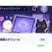

ARTLOOP CREATOR
今日もいいイラスト
つくっちゃお〜！
生成・投稿・分析・改善を、ひとつの管理画面で。
キュー画像0
次回投稿09:17
投稿枠2
状態稼働中
myイラスト
画像を追加して投稿順を管理。
分析・改善
改善内容を次回プロンプトへ反映。

設定
投稿時間・プロジェクトを保存。
POST HISTORY
投稿履歴
公開版ではサンプル履歴を表示しています。
夜空を漂うクラゲランプ
1,245 views / 128 likes
ふわふわおばけと黒ねこ
952 views / 88 likes
MY ILLUSTRATION
myイラスト
最大20枚。投稿順と投稿文、投稿タイミングを管理。
画像を投稿キューへ追加
0 / 20枚
投稿文
投稿タイミング
自動投稿を使わず、手動投稿だけにします。
ANALYZE & IMPROVE
分析・改善
改善案を保存して、設定の生成プロンプトへ反映。
24h評価サンプル
ビュー1,245
いいね128
ER10.2%
改善要望
SETTINGS
設定
プロジェクト・投稿時間・自動化導線を管理。
プロジェクト
自動投稿スケジュール
自動化・接続
APIキーは公開ページに置かず、非公開GitHub Actions側で管理します。
OpenAI
Actions経由GitHub ActionsのSecretsから利用
Threads
Actions経由投稿処理は非公開リポジトリ側
SUZURI
Actions経由商品作成処理は非公開リポジトリ側